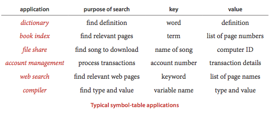
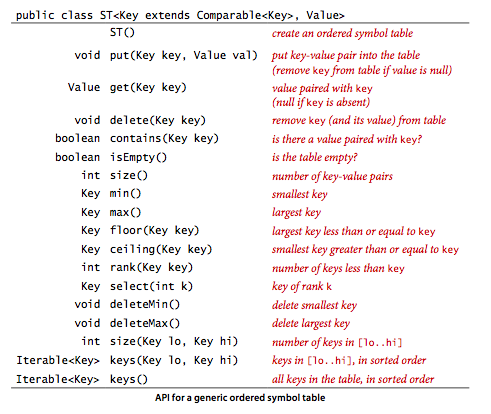
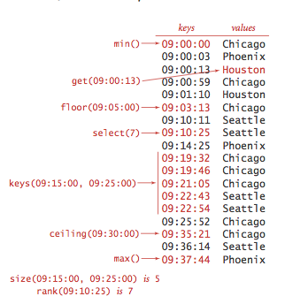
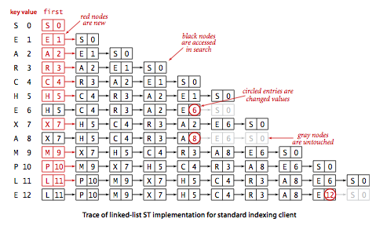
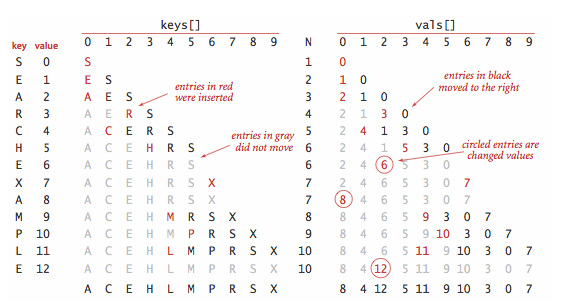
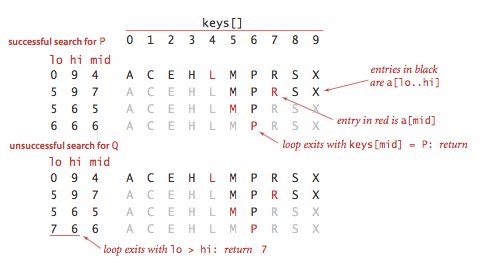

Elementary Symbol Tables
§ Symbol table.
The primary purpose of a symbol table is to associate a value with a key. The client can insert key–value pairs into the symbol table with the expectation of later being able to search for the value associated with a given key.

§ API.
Here is the API.

- Generics. We consider the methods without specifying the types of keys and values being processed, using generics.
- Duplicate keys. Only one value is associated with each key (no duplicate keys in a table). When a client puts a key-value pair into a table already containing that key (and an associated value), the new value replaces the old one. These conventions define the associative array abstraction, where you can think of a symbol table as being just like an array, where keys are indices and values are array entries.
- Null values.
No key can be associated with the value
null. This convention is directly tied to our specification in the API thatget()should returnnullfor keys not in the table. This convention has two (intended) consequences: First, we can test whether or not the symbol table defines a value associated with a given key by testing whetherget()returnsnull. Second, we can use the operation of callingput()withnullas its second (value) argument to implement deletion. - Deletion.
Deletion in symbol tables generally involves one of two strategies:
lazy deletion, where we associate keys in the table with
null, then perhaps remove all such keys at some later time, and eager deletion, where we remove the key from the table immediately. As just discussed, the codeput(key, null)is an easy (lazy) implementation ofdelete(key). When we give an (eager) implementation ofdelete(), it is intended to replace this default. - Iterators.
The
keys()method returns anIterable<Key>object for clients to use to iterate through the keys. - Key equality.
Java requires that all objects implement an
equals()method and provides implementations both for standard types such asInteger,Double, andStringand for more complicated types such asDate,FileandURL. For applications involving these types of data, you can just use the built-in implementation. For example, ifxandyareStringvalues, thenx.equals(y)is true if and only ifxandyhave the same length and are identical in each character position. In practice, keys might be more complicated, as in Person.java. For such client-defined keys, you need to overrideequals(). Java's convention is thatequals()must implement an equivalence relation:- Reflexive:
x.equals(x)istrue. - Symmetric:
x.equals(y)istrueif and only ify.equals(x)istrue. - Transitive: if
x.equals(y)andy.equals(z)aretrue, then so isx.equals(z).
In addition,
equals()must take anObjectas argument and satisfy the following properties:- Consistency: multiple invocations of
x.equals(y)consistently return the same value, provided neither object is modified - Not null:
x.equals(null)returnsfalse.
Keytypes immutable, because consistency cannot otherwise be guaranteed. - Reflexive:
§ Ordered symbol tables.
In typical applications, keys are Comparable objects, so
the option exists of using the code a.compareTo(b)
to compare two keys a and b.
Several
symbol-table implementations take advantage of order among the keys that
is implied by Comparable to provide efficient implementations of
the put() and get() operations.
More important, in such implementations, we can think of the symbol table as
keeping the keys in order and consider a significantly expanded API that defines
numerous natural and useful operations involving relative key order.
For applications where keys are Comparable, we implement
the following API:

- Minimum and maximum. Perhaps the most natural queries for a set of ordered keys are to ask for the smallest and largest keys. We have already encountered the need for these operations (in our discussion of priority queues in Section 3.4).
- Floor and ceiling. Given a key, it is often useful to be able to perform the floor operation (find the largest key that is less than or equal to the given key) and the ceiling operation (find the smallest key that is greater than or equal to the given key). The nomenclature comes from functions defined on real numbers (the floor of a real number x is the largest integer that is smaller than or equal to x and the ceiling of a real number x is the smallest integer that is greater than or equal to x).
- Rank and selection. The basic operations for determining where a new key fits in the order are the rank operation (find the number of keys less than a given key) and the select operation (find the key with a given rank). We also have already encountered the need for these operations, in our discussion of sort applications in Section 2.5.
- Range queries.
How many keys fall within
a given range? Which keys fall in a given range?
The two-argument
size()andkeys()methods that answer these questions are useful in many applications, particularly in large databases. - Delete minimum and delete maximum. Our ordered symbol table API adds to the basic API methods to delete the maximum and minimum keys (and their associated values).
- Exceptional cases. When a method is to return a key and there is no key fitting the description in the table, our convention is to throw an exception.
- Key equality (revisited).
The best practice in Java is to make
compareTo()consistent withequals()in allComparabletypes. That is, for every pair of objectsaandbin any giveComparabletype, it should be the case that(a.compareTo(b) == 0)anda.equals(b)have the same value.
§ Sample clients.
We consider two clients: a test client that we use to trace algorithm behavior on small inputs and a performance client.
- Test client.
The
main()client in each of our symbol table implementations reads in a sequence of strings from standard input, builds a symbol table by associating the value i with the ith key in the input, and then prints the table. - Frequency counter. Program FrequencyCounter.java is a symbol-table client that finds the number of occurrences of each string (having at least as many characters as a given threshold length) in a sequence of strings from standard input, then iterates through the keys to find the one that occurs the most frequently.
§ Sequential search in an unordered linked list.
Program SequentialSearchST.java
implements a symbol table with a linked list of nodes that contain keys and values.
To implement get(), we scan through the list,
using equals() to compare the search key
with the key in each node in the list. If we find the match, we return the
associated value; if not, we return null.
To implement put(), we also scan through
the list, using equals()
to compare the client key with the key in each node in the
list. If we find the match, we update the value associated with that key to be the
value given in the second argument; if not, we create a new node with the given key
and value and insert it at the beginning of the list.
This method is known as sequential search.

 Proposition A.
Proposition A.
Unsuccessful search and insert in an (unordered) linked-list symbol table both use N compares, and successful search uses N compares in the worst case. In particular, inserting N keys into an initially empty linked-list symbol table uses ~N^2/2 compares.
§ Binary search in an ordered array.
Program BinarySearchST.java
implements the ordered symbol table API.
The underlying data structure is two parallel array, with the keys kept in order.
The heart of the implementation is the rank() method,
which returns the number of keys smaller than a given key.
For get(), the rank tells us precisely where the key is
to be found if it is in the table (and, if it is not there,
that it is not in the table). For put(), the
rank tells us precisely where to update the value when the key
is in the table, and precisely where to put the key when the key
is not in the table. We move all larger
keys over one position to make room (working from back to front) and insert the
given key and value into the proper positions in their respective arrays.

- Binary search.
The reason that we keep keys in an ordered array is so that we can
use array indexing to dramatically reduce the number of compares required for each
search, using a venerable classic algorithm known as binary search.
The basic idea is simple: we maintain indices into the sorted key array
that delimit the subarray that might contain the search key.
To search, we compare the search key against the key in the middle of the
subarray. If the search key is less than the key in the middle, we search in the
left half of the subarray; if the search key is greater than the key in the middle
we search in the right half of the subarray; otherwise the key in the middle is
equal to the search key.

- Other operations. Since the keys are kept in an ordered array, most of the order-based operations are compact and straightforward.
Proposition B.
Binary search in an ordered array with N keys uses no more than lg N + 1 compares for a search (successful or unsuccessful) in the worst case.
Proposition C.
Inserting a new key into an ordered array uses ~ 2N array accesses in the worst case, so inserting N keys into an initially empty table uses ~ N^2 array accesses in the worst case.